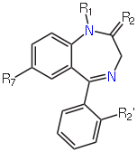
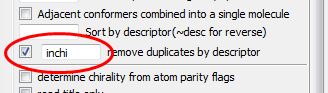
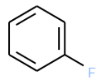
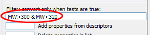

Filtering structures#
Setup
We are going to use a dataset of 16 benzodiazepines. These all share the following substructure (image from Wikipedia):

Create a folder on the Desktop called
Workand save benzodiazepines.sdf thereSet up a conversion from SDF to SMI and set
benzodiazepines.sdfas the input fileTick Display in Firefox
Click CONVERT
Remove duplicates
If you look carefully at the depictions of the first and last molecules (top left and bottom right) you will notice that they depict the same molecule.
Look at the SMILES strings for the first and last molecules. If the two molecules are actually the same, why are the two SMILES strings different? (Hint: try using
CAN - canonical SMILESinstead ofSMI.)
We can remove duplicates based on the InChI (for example):
Tick the box beside remove duplicates by descriptor and enter
inchias the descriptor

Click CONVERT
Duplicates can be removed based on any of the available descriptors. The full list can be found in the menu under Plugins, descriptors.
Are any of the other descriptors useful for removing duplicates?
Filtering by substructure
How many of the molecules contain the following substructure?

The SMILES string for this molecule is c1ccccc1F. This is also a valid SMARTS string.
Use the SMARTSviewer at the ZBH Center for Bioinformatics, University of Hamburg, to verify the meaning of the SMARTS string
c1ccccc1F.
Let’s filter the molecules using this substructure:
In the Options section, enter
c1ccccc1Finto the box labeled Convert only if match SMARTS or mols in fileClick CONVERT.
How many structures are matched?
Now find all those that are not matched by preceding the SMARTS filter with a tilde
~, i.e.~c1ccccc1F.Click CONVERT.
How many structures are not matched?
Filter by descriptor
As discussed above, Open Babel provides several descriptors. Here we will focus on the molecular weight, MW.
To begin with, let’s show the molecular weights in the depiction:
Clear the existing title by entering a single space into the box Add or replace molecule title
Set the title to the molecular weight by entering
MWinto the box Append properties or descriptors in list to titleClick CONVERT
You should see the molecular weight below each molecule in the depiction. Notice also that the SMILES output has the molecular weight beside each molecule. This could be useful for preparing a spreadsheet with the SMILES string and various calculated properties.
Now let’s sort by molecular weight:
Enter
MWinto the box Sort by descriptor and click CONVERT
Finally, here’s how to filter based on molecular weight. Note that none of the preceding steps are necessary for the filter to work. We will convert all those molecules with molecular weights between 300 and 320 (in the following expression & signifies Boolean AND):
Enter
MW>300 & MW<320into the box Filter convert only when tests are true and click CONVERT

If
|(the pipe symbol, beside Z on the UK keyboard) signifies Boolean OR, how would you instead convert all those molecules that do not have molecular weights between 300 and 320?
Note
Open Babel 2.3.2 allows specific substructures to be highlighted in a depiction. It also allows depictions to be aligned based on a substructure.